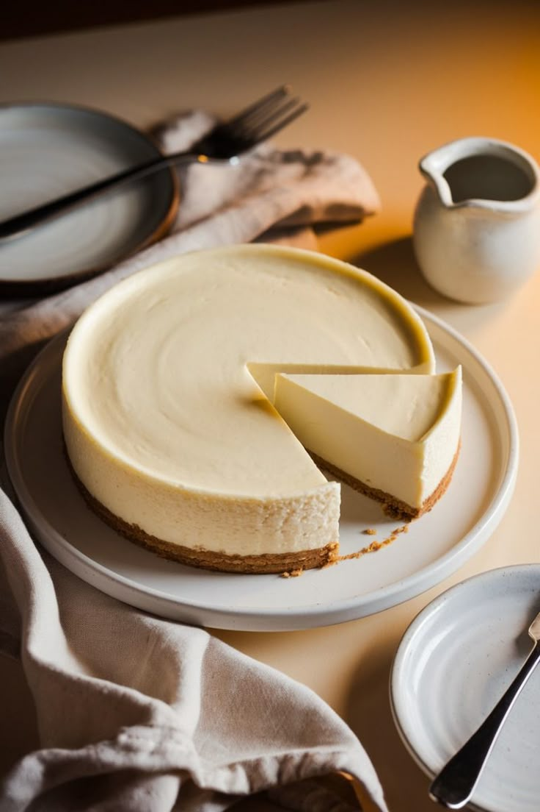

Ingredients
- 1 and 1/2 cups crushed digestive biscuits
- 1/4 cup melted butter
- 2 cups cream cheese
- 1 cup sugar
- 1 tsp vanilla extract
- 1/2 cup sour cream
- 3 eggs
- Fruit topping or sauce (optional)
Instructions
- Preheat oven to 160°C (320°F).
- Mix crushed biscuits with butter. Press into a springform pan and chill.
- Beat cream cheese and sugar until smooth.
- Add vanilla, sour cream, and eggs. Mix gently until smooth.
- Pour over crust and bake for 50–60 minutes.
- Cool completely and refrigerate for a few hours before serving.
- Add fruit topping if desired.